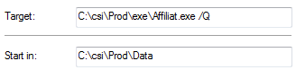
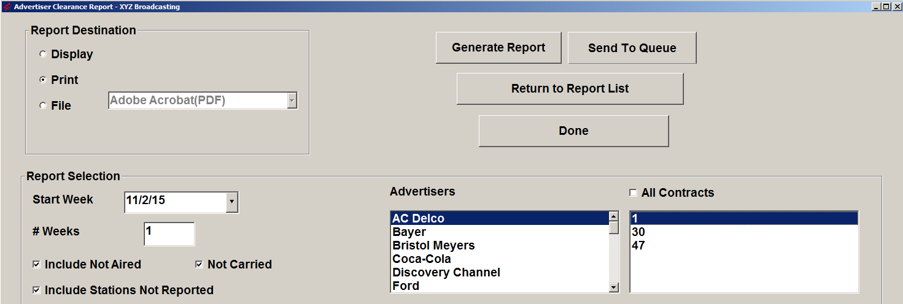
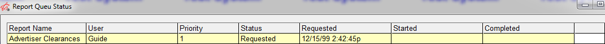

Affiliate Report Queue
The Report Queue allows Affiliate reports to run in the background, so users can accomplish other tasks while reports are generating. A standalone program constantly runs in the background, checking to see if any reports need to be generated. When it finds a report, it generates it based on the selectivity that is stored when “Send to Queue” is clicked.
Setup
The Report Queue program can be set up one of three ways:
- From the database server by creating an entry in the CSI_Server.ini
- From a standalone PC using Windows Task Scheduler
- From the Affiliate System File menu
CSI Server Method
The CSI Server Manager can be used to run the Report Queue. Follow these setup steps to configure the Station Spot Builder using the CSI Server Manager.
Note:
Use csi_Server_Mngr to startup csi_Server if not already running.
Navigate to the csi\prod\exe folder and open the CSI_Server.ini file with a text editor.
Near the top of file, in the “SectionNames” area, type in AffiliateReportQueue after the names of the other programs already configured to on the CSI_Server.ini. After editing, it may look something like this (depending on what other programs are already configured on the CSI_Server.ini):
SectionNames = GetPaid, Efficio, AffiliateReportQueue
Add an Affiliate Report Queue section to the CSI_Server.ini file by copying the text below to the end of the CSI_Server.ini file.
Example:
[AffiliateReportQueue]
‘0=Off; 1=On
Enabled = 1
‘0=Off; 1=On
WeekDays = 1111111
Interval = 86400
StartTime =
MonthDaysToRun =
TimeSlot =
Exe = C:\CSI\Prod\EXE\StartAffiliateExportQueue.exe
StartInFolder = C:\CSI\Prod\Data
CommandLine =
‘1=Program will check once each hour to verify that it is still running
KeepProgramRunning = 1
Edit the Exe path on the copied text to point to the affiliatereportqueue.exe file in your csi\prod\exe folder (the drive letter among other things may need to be edited).
Edit the StartInFolder path to point to the location of the affiliat.ini and traffic.ini file (typically in the Data folder).
Start the CSI Server Manager if it’s not already running by running CSI_Server_Mgr from the Exe folder.
With this configuration on the CSI_Server.ini, the system will keep the program running in the background all the time.
Windows Task Scheduler Method
Windows Task Scheduler can be used as an alternative way of running the Report Queue. Follow these steps to configure the Affiliate Report Queue to run using Task Scheduler.
- Start Windows Task Scheduler and select “Create Task”.
- Enter a name for the task in the name field, such as “Affiliate Report Queue”.
- Press the Trigger tab and select New.
- From the “Begin the Task” selection, chose “At Startup”, then press OK.
- Press the Actions tab and select New.
- The Action should be set to “Start a Program”. Press the Browse button and browse to the affiliate reportqueue.exe in the exe folder.
- In the Start-In area, enter the location of the Traffic.ini and Affiliat.ini, typically csi\prod\data, and then press OK.
- Press the Settings tab.
- Check on the option labeled “If the task fails, restart every:”, and set the restart time to 1 minute.
- Deselect the option labeled “Stop the task if it runs longer than”.
- Verify that “Do not start a new instance” is selected at the bottom of the screen, and press OK to finish creating the task.
- You can now start the task by selecting it from the list and choosing Run. It will also start automatically each time the computer it is on is restarted.
With Windows Task Scheduler, using the configuration steps listed above, the Report Queue will keep running in the background. If for some reason it stops running, Task Scheduler will check every minute and start it again if it’s not running.
Report Queue Shortcut Method
The Report Queue can also be started using a shortcut.
Set the Target to the “AffiliateReportQueue.exe” file in the exe folder.
Set the Start in to the location of the Traffic.ini and affiliat.ini files (typically the data folder).
Then launch the Report Queue by double clicking the shortcut.
User Setup
Currently, to allow a user to have the ability to send reports to the Report Queue, they must start the Affiliate System with a specially modified shortcut.
To modify their shortcut to allow access, a “ /Q” (space /Q) must be added to the Affiliate system shortcut, as shown in the example below.

The priority order in which reports generate is based on the order in which they were sent to the queue. A user can override that order and change a report’s priority, or remove it from the queue all together, if given access to do so.
To allow a user to remove a report or change the priority of queued reports, go to the User Options screen and set the “override export queue priority” setting (on the Restrictions tab) to green.
Sending Reports to the Report Queue
For users with access to the Report Queue (through the specially modified shortcut), a “Send to Queue” button will be available on the Advertiser Clearance report selectivity screen, to the right of the “Generate Report” button. (The Report Queue must be running to successfully generate reports using the Report Queue.)

To generate the report using the queue:
- Fill in the desired report selectivity, and select either Print or File for the Report Destination selection field. (Reports can only be sent to the Queue when Print or File is selected.)
- Press the Send to Queue button.
- A popup screen will appear that allows the user to enter a descriptive title for the report in the Description field. Enter a description for the report, then press the Add to Queue button. This will add the report to the report queue, where it will be generated when it reaches the top of the queue. The finished report will be either be printed or placed in the export folder, depending on whether the report destination was set to Print or File.
Viewing the Report Queue Status Screen
To view the status of tasks sent to the Report Queue, press the File menu then press “Report Queue Status”.

The following list describes what each field on the Report Queue Status screen means:
- Report Name: This is the name of the Affiliate report.
- User: This is the name of the user that sent the report to the Report Queue.
- Priority: This is the priority number given to the report, based on when the report was sent to the Queue. Only users with the appropriate access can change the priority of the queue.
- Status: This is the current status of the report: Requested, Processing, or Completed.
- Requested: This is the date and time at which the report was requested.
- Started: This is the date and time at which the report started processing.
- Completed: This is the date and time at which the report completed.
Clicking in the far right column will stop a report from being generated. Users must have the appropriate access to remove a report from the queue.
The Refresh button can be pressed to refresh the status of the items on the screen.